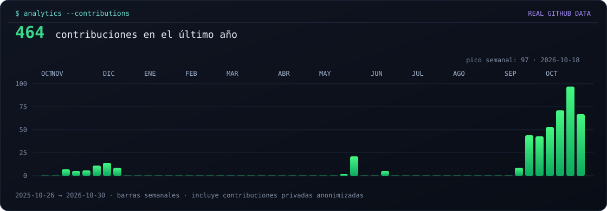

Desarrollo Full Stack
Interfaces responsivas, APIs, autenticación y lógica de negocio conectadas en una experiencia consistente.
Next.jsReactNode.js
Disponible para colaborar
Soy Jermy Cubas Solsol, desarrollador Full Stack y estudiante de Ingeniería de Sistemas. Diseño plataformas de gestión, pagos y operaciones con una mirada práctica, segura y escalable.
Tecnologías con las que construyo
01 — Perfil
Me interesa el punto donde la ingeniería se encuentra con las necesidades reales: digitalizar un trámite, ordenar una operación o conectar un pago sin añadir complejidad innecesaria.
Actualmente curso el VIII ciclo de Ingeniería de Sistemas en la Universidad Nacional Toribio Rodríguez de Mendoza y pertenezco al tercio superior. Desarrollo soluciones web de extremo a extremo y continúo fortaleciendo arquitectura, calidad y despliegue.
Mi trabajo reúne interfaces claras, lógica de negocio, bases de datos y servicios externos. He participado en sistemas municipales, transporte, salud veterinaria, turismo, asociaciones productivas y operaciones comerciales.
02 — Especialidades
Combino producto, desarrollo y operación para entregar sistemas completos, no piezas aisladas.
Interfaces responsivas, APIs, autenticación y lógica de negocio conectadas en una experiencia consistente.
Flujos operativos, roles, trazabilidad, reportes y paneles administrativos adaptados a cada organización.
Modelado relacional, pagos digitales, servicios externos y despliegues con observabilidad y calidad.
Stack técnico
TypeScript · React · Next.js · Tailwind
Node.js · Express · C# · .NET
PostgreSQL · MySQL · Prisma · Neon · Aiven
Git · Docker · Vercel · SonarQube · Grafana

Autoevaluación orientativa; no representa una métrica oficial.
03 — Trabajo seleccionado
Una selección de plataformas construidas para administración pública, operaciones, salud, turismo y comercio.
04 — Trayectoria
Una formación en curso acompañada de práctica constante en proyectos completos.
VIII ciclo · Tercio superior · Universidad Nacional Toribio Rodríguez de Mendoza
Flujos modernos de desarrollo asistido y automatización aplicada.
Desarrollo de aplicaciones frontend con Angular.
05 — GitHub
La práctica diaria, la documentación y la mejora incremental forman parte de mi manera de construir software.
@Jermy061
06 — Contacto
Conversemos sobre tu sistema, producto o colaboración. Una buena solución comienza entendiendo el problema.